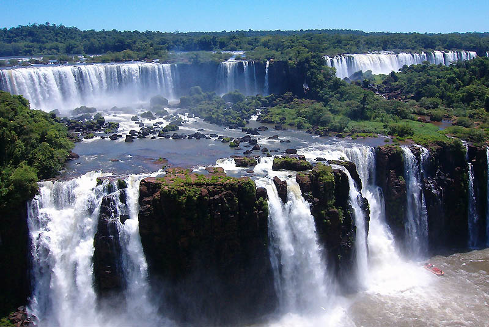

Красота Игуасу. Взгяд из Аргентины
«Бедная Ниагара!» - воскликнула Элеонора Рузвельт, едва бросив взгляд на водопады Игуасу.
Это захватывающее дух зрелище природы расположено на границе Бразилии и Аргентины.
Водопады Игуасу (Cataratas del Iguazu) – это самые большие водопады в мире по водоизмещению,
находятся на границе Аргентины и Бразилии, одновременно на территории аргентинского
и бразильского национальных парков Игуасу. Недалеко от места, где река Игуасу впадает
в реку Парана, природа создала воистину впечатляющее чудо, ради которого многие люди летят
на другой континент. Ежегодно водопады Игуасу посещают около
2 миллионов туристов! Это один из главных хайлайтов Южной Америки
(как и Мачу-Пикчу, включены в список Всемирного наследия ЮНЕСКО)
Факты
-
Расположение: Водопады Игуасу находятся на границе между Бразилией и Аргентиной.
- Размеры: Разлом имеет ширину 2700 м, из них 800 м находятся на территории Бразилии и 1900 м - на
территории Аргентины.
-
Масса воды: Высота обрыва 75 м. Каждую секунду с него падало 7000 куб. м воды вплоть до последнего времени,
когда выше по течению построили плотину, сократившую объем падающей воды на две трети.
Теперь количество воды в реке зависит от уровня воды в образовавшемся водохранилище Сальто де Каикса.
-
Открытие: В 1 542 г. испанский мореплаватель Альвар Нуньес Кабеза де Вака
(1490-1557) стал первым европейцем, увидевшим водопады.
-
Список Всемирного наследия ЮНЕСКО: Водопады Игуасу и два национальных парка на обоих
берегах реки были включены в Список Всемирного наследия ЮНЕСКО в 1986 г.
Чтобы увидеть водопады Игуасу, надо обязательно выбрать сторону – аргентинскую или бразильскую,
либо побывать и в Бразилии, и в Аргентине. Да, дело в том, то в этом месте на слиянии двух рек Параны и Игуасу
сходятся сразу три страны: Аргентина, Бразилия и Парагвай, но в разделе имущества водопадов последняя не участвует
(однако многие путешественники ездят туда за туристическим штампиком и заодно посещают гидроэлектростанцию).